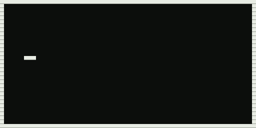

Barrier
Graeme V. Samways · DREAMER no. 1 (1980-09) p. 3 1K RAM

A snake of dots crawls across the screen and leaves a trail behind it. You steer it so that it never touches the border or its own tail. Pick a speed first, or let F make the game speed up as it goes.
Keys
Speed 0-E at the start (F = accelerating); C left, D up, E down, F right.
Files
| File | Version | Load | Run |
|---|---|---|---|
| Barrier.c8 | main | 0200-02CF | C000 |
Listing as transcribed (with notes): barrier.txt
Source
DREAMER no. 1 on archive.org, p. 3 (PDF page 3). Author: Graeme V. Samways.
Corrections applied
None.
Open doubts
None.